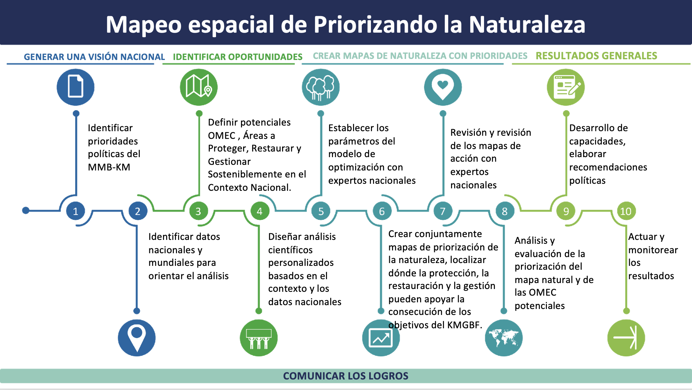
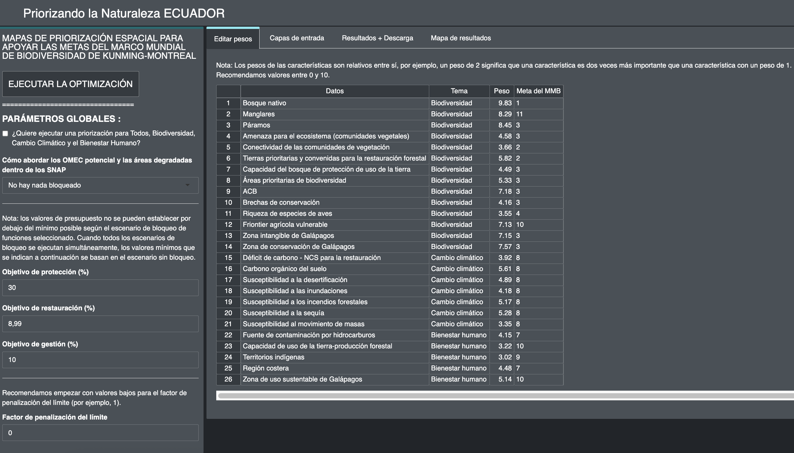

2.1 What is the Prioritizing Nature webtool for?
The Prioritizing Nature webtool is an interactive webtool created with R-shiny and connected to prioritzr in the backend. This tool can be used by interested Parties without the need for coding or modeling knowledge, with the same it achieves the automation of steps 5, 6 and 7 of the spatial prioritization mapping process presented in Figure 1.
Figure 1. Workflow for the spatial prioritization mapping in the Prioritizing Nature project.
The Prioritizing Nature webtool applications
Display the input layers or planning element;
View and download the resulting maps;
Create spatial prioritization maps;
Download the result maps in raster format, which can be used for further analysis according to the needs of the interested parties in software from Geographic Information Systems (GIS).
Download results and parameters of the model applied in the analysis as a summary table, which are downloaded in .xlsx and .csv formats, which can be used in Excel or other tools.
Create different spatial prioritization , by modifying the parameters related to the percentage (%) of the national territory allocated to protection, restoration and management target actions. These configurations can be adapted to the country’s political objectives in terms of conservation, restoration, protection, among others.
Edit the penalty limit factor parameter according to the analysis needs;
Edit the weights of each of the input layers or planning elements;
Create prioritization maps with a new stakeholder group;
Re-run spatial the prioritization analysis with updated input layers.
The web-based tool executes optimizations quickly (typically within 5-10 minutes). It can therefore be used to generate and refine conservation plans in real time during stakeholder meetings, and contribute to a more transparent, inclusive and participatory decision-making process.
Figure 2. Interface of the Prioritizing Nature Ecuador webtool.
Important
Access the Prioritizing Nature Ecuador webtool here